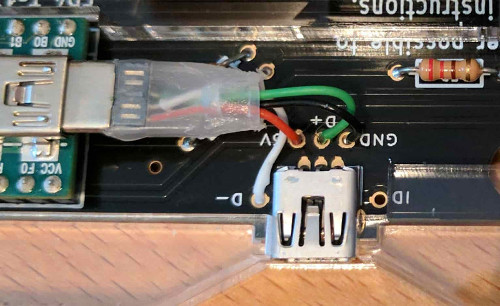

The Keyboard
The Ergodox is a do-it-yourself keyboard project designed with ergonomics in mind. It uses 76-80 Cherry MX style mechanical switches (such as Cherry or Gateron) laid out in a columnar stagger (rather than the more conventional row stagger) layout with components that can easily be sourced. It’s completely programmable and can be flashed with several different firmware options.
The entire project (including this website) are Open Source, allowing you the freedom to modify and tweak the project as you see fit.
Assembling this project will require some patience, soldering ability, and access to a computer to flash the firmware onto the keyboard.

Who built this?
The ErgoDox keyboard is a DIY keyboard project originally developed by “Dox” (Dominic Beauchamp) inspired by the Key64 Keyboard.
The printed circuit board was designed by “bpiphany” (Fredrik Atmer).
The original 3D printable case was designed by Dox but a far more popular and less expensive option was a layered acrylic design by litster.
This website was built by robotmaxtron with some help from the community as a way to centralize the documentation after ErgoDox.org went defunct. If you want to contribute to the project, pull requests, bugs (via Github issues) can be filed at our Github
Both the keyboard design and hardware files are licensed under the GNU Public License 3
Guide
A few things will need to be decided in advance before choosing parts or cases. The ErgoDox supports either the standard 76 key or 80 key layout.
This project will require some tools such as a soldering iron, flush cutters, wire strippers, solder, and possibly a screwdriver.
The build guide also assumes that you already know how to solder, if you do not know how to solder or want a refresher there are several guides available on YouTube and other places on the internet.
Parts Needed
To build an Ergodox, several readily available components will need to be procured.
Some notes on the electronics:
The Cherry MX style switches can be either pcb or plate mounted.
Either through hole or surface mount diodes can be used as the pcb supports both including in-switch through hole diodes.
If the typical 3mm red leds are not used, be sure to replace the 220 Ω resistors with ones that match the leds chosen.
PJRC sells a Teensy 2.0 both with and without header pins pre-installed. If you use a Teensy without the header pins pre-installed, you will need to obtain and install them.
The pcb only supports presently, three in switch LEDs on the inner colum of the right hand labeled LEDa, LEDb, and LEDc.
Many if not all of the small components can be easily found online at vendors such as Mouser or Digikey.
Printed Circuit Boards
The pcb files are available in a separate repo available here should you wish to modify and/or produce them.
- There are several vendors who generally stock some of the older revisions of the pcbs.
- You could also buy the updated pcb from your vendor of choice by providing them the KiCad or Gerber files in the repo listed above or purchase a batch from OSH Park
Small Electronics
Full Parts list:
1x Pair of pcbs (one for each hand)
1x Teensy USB Board, Version 2.0
24x Teensy header pins, male (unless pre-installed)
1x MCP23018-E/SP I/O expander
76-80x Cherry MX switches, (depending on your layout)
76-80x 1N4148 diodes, SOD-123 package (Surface mount) or DO-35,(0.3" pitch) (through hole) (again, the amount needed will depend on your layout)
2x 2.2k Ω resistors (red, red, red)
3x 3mm T1 LEDs
3x 220 Ω resistors, or match to LED. (red, red, brown)
5x Short jumpers (You can also use the clipped off legs from your resistors)
1x 0.1 µF ceramic capacitor (marked "104" for 10*104 picofarad). Not strictly necessary but suggested
1x USB mini B connector WM17115
1x USB mini B plug with short cable (such as H2955)
1x USB cable male A to male mini B
2x 3.5 mm TRRS sockets, CP-43514. FC68129 will also work if its extra pins are snipped off
1x Cable with two 3.5 mm TRRS plugs
1x Ergodox Keyboard case
76-80x MX Keycaps
Case & Keycaps
While there are many options of materials available (such as cases carved out of wood) generally ErgoDox cases are either 3D printed or layered acrylic sheets.
The 3D printable case options are available in our repo and have been uploaded to Shapeways
- The most popular and less expensive option is the layered acrylic design.
Github Repo assembled with m3 bolts.
- There is also a 3D printable tenting stand in our repo. This will prop up the ErgoDox at a very natural and comfortable angle.
Like any mechanical keyboard, keycaps will need to be obtained. In a normal 76 key configuration you will need:
12x 1.5u
4x 2u
60x 1u
If the 80 key layout is used, a slightly different keycap configuration will be needed replacing the 2u keys with two 1u keys each:
12x 1.5u
68x 1u
The 1.5u outer column keys can optionally be mounted closer in and 1u keycaps can be used.
Note: This layout is only supported on the newer (post 2012) revisions of the pcb and will require a modified plate design to support the new placement.
Assembly Guide
Now the section where the soldering and real assembly happens, at the end of this section there will be a couple external links to other build guides including a photo build guide and a video build log.
- Arrange the pcbs face down and solder in the diodes to this side.
- 1a. If surface mount diodes are chosen, place them on the small square copper pads but be sure to orient the diodes so that the line on the diode faces the square hole. Solder the diodes and repeat for each switch on both hands.
- 1b. If through hole diodes are chosen, place them through the two hole immediately to the left and right of copper pads under the square that the switch will take up. Be sure to check the orientation to be sure that the line on the diode is closest to the square hole. Solder and repeat for each switch on both hands.
-
Note: The additional holes surrounding the switch are all for diodes. Only one diode per switch is needed.
-
Flip both of the pcbs over, this face up side (without the diodes) will be the side that the remaining components will be placed.
- Insert both the 2.2k ohm resistors and 220 ohm (or whatever resistors chosen appropriate for the leds selected) onto the right hand where labled on the pcb and solder into place.
Note: Keep the legs clipped off the resistors, they can be used in a later step when the TRRS connections are installed. - On the left hand pcb, insert the I/O expander around the MCP23018 rectangle. Solder the legs in place.
Note: There are three holes without copper pads and do not need to be soldered. - (Optional but suggested step) On the left hand pcb, insert the ceramic capacitor into the first and third holes of the top row and solder in place.
- 5a. Bridge with solder the two copper pads immediately to the left of the ceramic capacitor.
- Insert either jumper wire or the legs clipped from the resistors bent into a U, into both of the the white pairs of holes on either side of where the 3.5mm connections will go and solder in place.
- 6a. Place 3.5mm connection, solder the 4 connection points.
- 6b. Repeat both the jumper and 3.5mm connectors on the other hand.
- Install the male jumper pins to the underside of the Teensy with the button face up and solder the pins to the top side of the Teensy.
Note: If the Teensy already has jumpers already installed, skip this step. - Insert the Teensy jumper legs from the Teensy assembly onto the right hand pcb with the usb facing the direction of the resistors and solder in place.
- Cut one of the mini usb cables about 1.5” from the connector.
- 9a. Strip off all of the sheathing from the cable, exposing the 4 wires.
- 9b. Place the following wires into their respective holes:
White: D- Red: 5v Green: D+ Black: GND - 9c. Solder wires to the pcb.
- 
- On the right hand, insert the mini usb connector into the holes marked on the pcb and solder into place.
- Prepare the chosen case.
- 11a. If the layered acrylic case design is being used, peel off the protective film off the acrylic pieces.
- Place the pcb under the 3rd acrylic layer and insert the switches into the acylic plate making sure that both pins from the switch are extending out through the pcb.
- 11b. If the 3D printed case is being used
- Place the pcb under the top section and push the switches into the case making sure that both pins from the switch are extending out through the pcb.
- 11c. Solder switches in place.
Note: Make note of the location for the three switches on the right hand that will support the LEDs
- 11a. If the layered acrylic case design is being used, peel off the protective film off the acrylic pieces.
- On the right hand, insert the three leds through the housing of the three switches and solder into place.
Note: LEDs have polarity so be sure that the positive leg of the LEDs goes into the (face up) square hole. - Finish assembling the case, plug in the TRRS cable between the two halves and proceed to building and flashing the selected firmware.

- Other Guides:
- More the video type? YouTube has several other good guides, this one I think does an excellent job of balancing information and length.
- Imgur Build Log: user robotmaxtron shares his build log (including mistakes).
- Massdrop also has a really great guide for assembly.
Firmware Guide
There are a number of options for the firmware powering the ErgoDox keyboard, each with their own sets of features and options. Please consult the README guides for each firmware for specific instructions on how to use and compile it.
QMK
A build guide for compiling and customizing your firmware is best found in the repo’s readme
Note: There are many users who have committed their keymaps that can be built on and easily adapted to suit your needs.
The QMK Online Configuration tool listed in the ErgoDox-EZ can also be used to generate .hex files for this original design and is based on QMK.
TMK
The popular TMK firmware has also been ported to the ErgoDox.
Online Massdrop Configurator
Massdrop has developed an online tool for generating Ergodox keymaps without the need to compile your own firmware, suggested for users who might not be comfortable compiling their own firmware.
Original Ergodox Firmware
The originally designed firmware is also available, though fallen out of favor due to QMK and TMK’s improved functionalty and larger community support. The project has not had much movement since late 2015.
Flashing your Ergodox
Once the firmware has been compiled down into a .hex file, it will need to be uploaded to the keyboard typically called flashing.
- Flashing your Ergodox is typically done with the Teensy Loader, and will be needed for the following guide.
- Locate your .hex file generated by your firmware of choice
- Start the Teensy Loader program
- Load the .hex file into it.
- Press the Reset button by pressing the reset button onboard the Teensy, you may need to insert something such as a paperclip or small screwdriver gently into the reset hole in the top right corner of your case.
Note: Some firmware (such as QMK and TMK) allow for this to be programmed as a keycode. - Click the button in the Teensy app to upload the firmware to your keyboard.
Variants
The Ergodox by nature as an open source project has been forked and changed since it’s initial design, the following projects are just a selection of the more popular ones.
Infinity
Quickly becoming the most popular variant of the ErgoDox and developed by Input.club, the Ergodox Infinity has an LCD screen built into each half with a few other updates to the original design.
- Firmware options:
- Cases:
- Printed Circuit Board:
- Guides:
- Official Build Guide
- Reddit user keredomo has put together a set of Linux guides
- Differences between the original ErgoDox and the Infinity:
- In-switch backlighting
- USB-C replaces TRRS between the two halves
- Each half can be used independently
- Pre-soldered smd components, only switches and LEDs will need to be soldered
- LCD screens on each keyboard half
- Proper costar stabilizer support
- ALPS switch support
EZ
Another popular fork of the ErgoDox is a pre-built version with a case that supports legs that will allow you to ‘tent’ or angle the ErgoDox-EZ.
- Firmware:
- Differences between the original ErgoDox and the ErgoDox-EZ:
- Preassembled
- Optional tenting legs